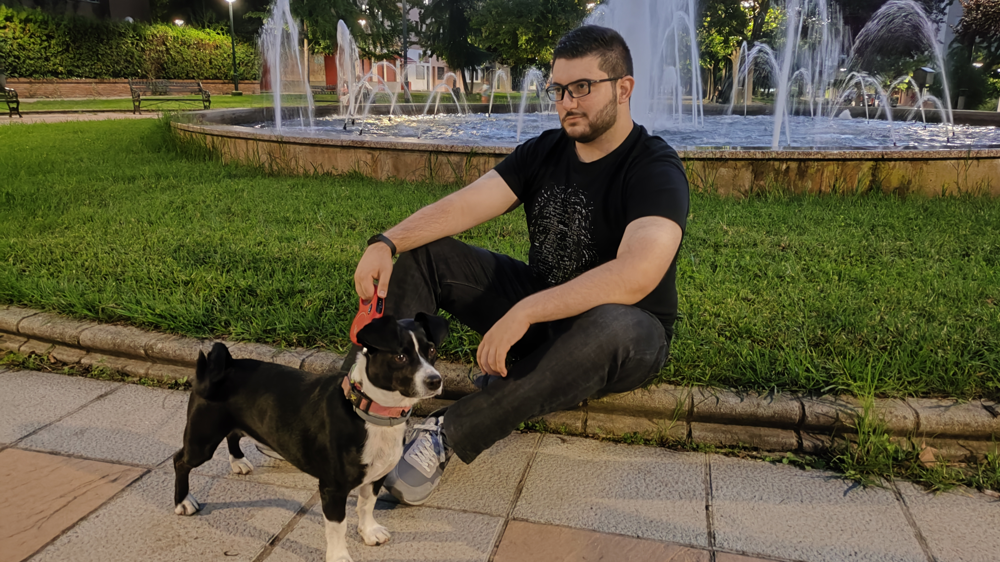

Antonio Manuel
I'm
About Me
I am passionate about video game development and hold an Advanced Technical Diploma in Cross-Platform Application Development. While my goal is to work in the gaming industry, I am open to other opportunities where I can apply my technical skills and grow professionally.
Unity C# Programmer & Adaptable Developer.
I believe that my greatest quality is my ability to learn and adapt to new work methods and technologies that provide me with possibilities that I did not contemplate, expanding horizons excites me.
- Birthday: 12 July 2001
- GitHub: https://github.com/AntonioManuelDev
- Phone: +34 633 043 018
- City: Badajoz, Spain
- Age: 24
- Degree: Cross-Platform Application Development
- Email: antomalma@gmail.com
- Availability: Open to work
I've been in the workforce for a while now, but in a position that doesn't allow me to indulge my passion for programming, so I'm very interested in job opportunities that give me the chance to explore that side of the job.
Resume
Up to now I don't have many medium-sized projects behind me, largely due to the time demands of my work, however during my studies and during some Game Jams I have made small games in Unity that have been quite rewarding to develop, I have also created some tools in Python to make the repetitive processes in my current job easier.
Sumary
Education
Currently my most important studies are my Advanced Technical Diploma in Cross-Platform Application Development as I already mentioned, nevertheless, I have other minor TIC related courses as an Unity Game Development and an AI Tools for Work intensives.
- CampusNET
- Cámara de Comercio / Viral Gaming Center
- Consultora Formación
Main Skills
Work useful skills
- My programming knowledge is mostly focused on Object Oriented Programming languages: C#, C++, Java and Python.
- As you can see I'm also capable of setting a working website using online tools combined with HTML, CSS and JS.
- I'm a native spanish speaker with advanced english level, I usually understand written english without any problem and most of spoken english as well.
- One of my interests is editing, so image and video editing could be considered some of my skills too.
Professional Experience
Technical Support
2023 - 2025
Colabora Servicios, Badajoz
My main work since 2 years or so has been providing technical support and guide for TimeCheck, a website and app made for companies to have a register of their employees schedule.
Workplace Harassment Protocol
2025
Colabora Servicios, Badajoz
During last months I started to manage another department focused on giving information and preventing workplace harassment for companies, this work was added to my previous labor as technical support, so currently I'm working on both tasks.